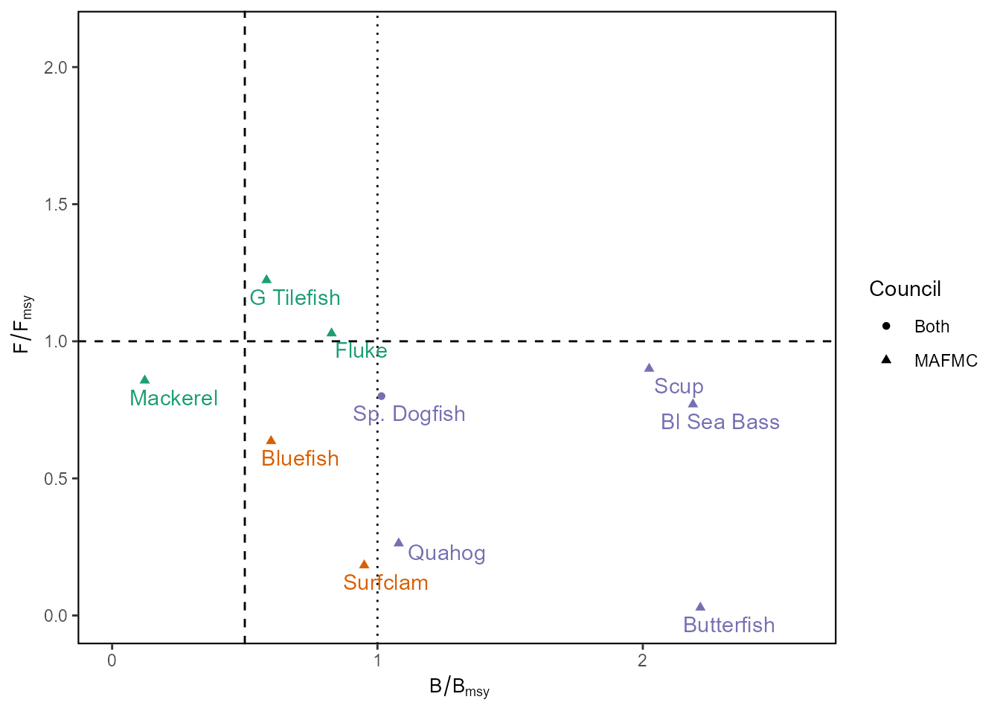
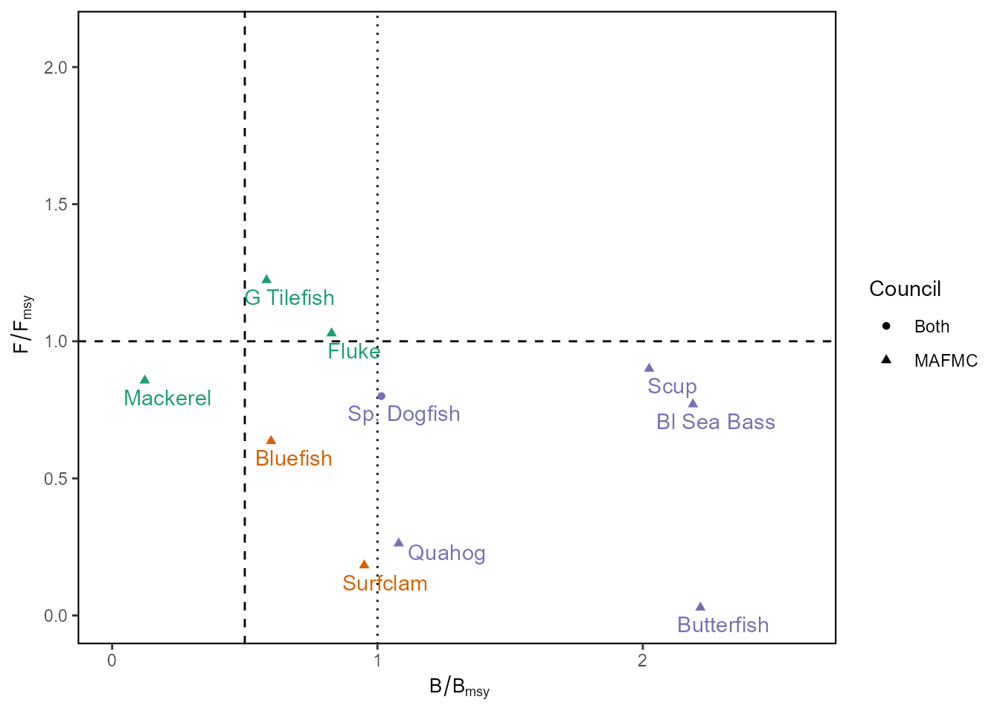
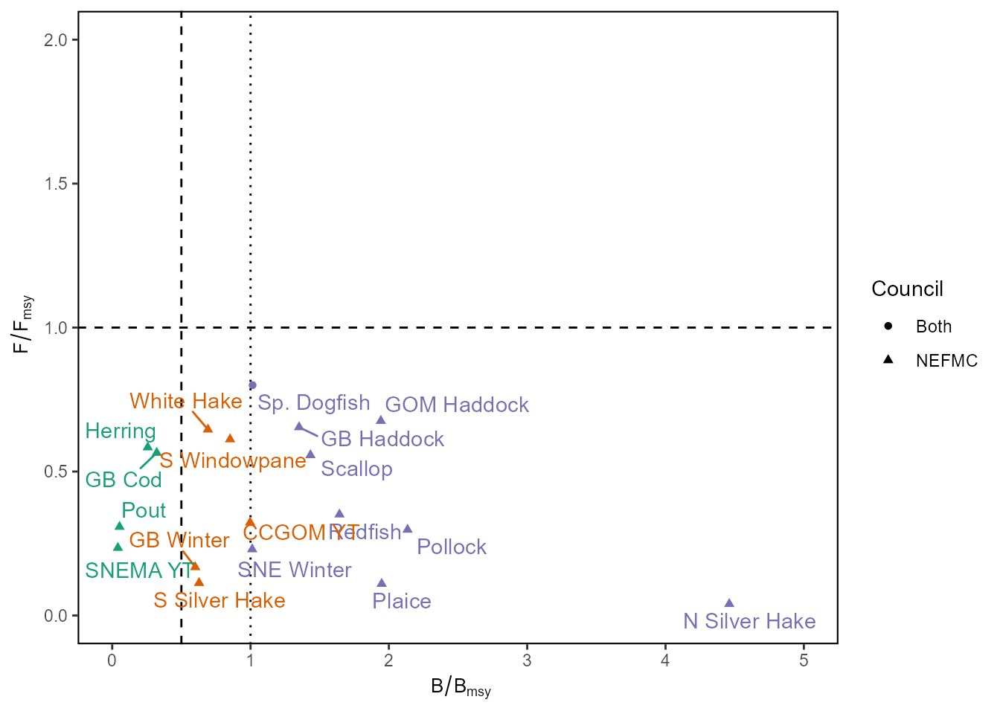

stock_status.RmdThis vignette demonstrates how to use this R package to create the stock status indicator for the State of the Ecosystem reports.
stocksmart
Andy renamed the assessmentdata package stocksmart based on Stock SMART.
Two data frames are in the package, stockAssessmentData
and stockAssessmentSummary.
In stockAssessmentData we have time series. Columns are
StockName, Stockid, Assessmentid, Year, Value, Metric, Description,
Units, AssessmentYear, Jurisdiction, FMP, CommonName, ScientificName,
ITIS, AssessmentType, StockArea, RegionalEcosystem and the reported
metrics are Catch, Fmort, Recruitment, Abundance, Index.
In stockAssessmentSummary we have assessment metadata.
Columns are Stock ID, Stock Name, Jurisdiction, FMP, Science Center,
Regional Ecosystem, FSSI Stock?, ITIS Taxon Serial Number, Scientific
Name, Common Name, Stock Area, Assessment ID, Assessment Year,
Assessment Month, Last Data Year, Review Result, Assessment Model, Model
Version, Lead Lab, Citation, Final Assessment Report 1, Final Assessment
Report 2, Point of Contact, Life History Data, Abundance Data, Catch
Data, Assessment Level, Assessment Frequency, Model Category, Catch
Input Data, Abundance Input Data, Biological Input Data, Ecosystem
Linkage, Composition Input Data, F Year, Estimated F, F Unit, F Basis,
Flimit, Flimit Basis, Fmsy, Fmsy Basis, F/Flimit, F/Fmsy, Ftarget,
Ftarget Basis, F/Ftarget, B Year, Estimated B, B Unit, B Basis, Blimit,
Blimit Basis, Bmsy, Bmsy Basis, B/Blimit, B/Bmsy, MSY, MSY Unit,
Assessment Type.
Build a stocksmart-like object from PDB files from Spring 2024 MT assessments
MTspring24 <- build_pdb(
stocknames = data.frame(
Stock.Name = c(
"Black sea bass - Mid-Atlantic Coast",
"Butterfish - Gulf of Maine / Cape Hatteras",
"Atlantic cod - Eastern Gulf of Maine",
"Atlantic cod - Georges Bank",
"Atlantic cod - Southern New England",
"Atlantic cod - Western Gulf of Maine",
"Tilefish - Mid-Atlantic Coast",
"Atlantic herring - Northwestern Atlantic Coast",
"Atlantic surfclam - Mid-Atlantic Coast"
),
ABBR = c(
"BSBUNIT",
"BUTUNIT",
"CODEGOM",
"CODGB",
"CODSNE",
"CODWGOM",
"GTFUNIT",
"HERUNIT",
"SCUNIT"
)
),
fnames = here::here("data-raw/SISspringMT2024") |>
list.files(
pattern = "db.RData.csv$",
full.names = TRUE
),
year = 2024)
head(MTspring24)## # A tibble: 6 × 28
## Entity.Name `Assessment Type` `Last Data Year` `Lead Lab`
## <chr> <chr> <int> <chr>
## 1 Black sea bass - Mid-Atlantic C… Management Track 2023 NEFSC
## 2 Butterfish - Gulf of Maine / Ca… Management Track 2023 NEFSC
## 3 Atlantic cod - Eastern Gulf of … Management Track 2023 NEFSC
## 4 Atlantic cod - Georges Bank Management Track 46 NEFSC
## 5 Atlantic cod - Southern New Eng… Management Track 2023 NEFSC
## 6 Atlantic cod - Western Gulf of … Management Track 2023 NEFSC
## # ℹ 24 more variables: `Point of Contact (assessment lead)` <chr>,
## # `F Year` <int>, `Min F Estimate` <dbl>, `Max F Estimate` <dbl>,
## # `Best F Estimate` <dbl>, `F Unit` <lgl>, Flimit <dbl>, FMSY <dbl>,
## # `F target` <dbl>, `F/Flimit` <dbl>, F.Fmsy <dbl>, `F/Ftarget` <dbl>,
## # `B Year` <int>, `Min B. Estimate` <dbl>, `Max B. Estimate` <dbl>,
## # `B Basis` <chr>, MSY <chr>, `MSY Unit` <chr>, Blimit <dbl>, BMSY <chr>,
## # `B/Blimit` <dbl>, B.Bmsy <dbl>, `Stock Level (relative) to BMSY` <chr>, …assess.csv-like object
The create_stock_status() function can be used to create
a data frame similar to the assess.csv file that Sarah used
to provide. This data is not fully processed for inclusion in
ecodata.
stock_status <- create_stock_status(
data = stocksmart::stockAssessmentSummary,
decode = FALSE)
head(stock_status)## # A tibble: 6 × 60
## `Stock ID` Entity.Name Jurisdiction FMP `Science Center`
## <dbl> <chr> <chr> <chr> <chr>
## 1 10787 Atlantic surfclam - Mid-Atlant… MAFMC Atla… NEFSC
## 2 10787 Atlantic surfclam - Mid-Atlant… MAFMC Atla… NEFSC
## 3 10787 Atlantic surfclam - Mid-Atlant… MAFMC Atla… NEFSC
## 4 10787 Atlantic surfclam - Mid-Atlant… MAFMC Atla… NEFSC
## 5 10787 Atlantic surfclam - Mid-Atlant… MAFMC Atla… NEFSC
## 6 10787 Atlantic surfclam - Mid-Atlant… MAFMC Atla… NEFSC
## # ℹ 55 more variables: `Regional Ecosystem` <chr>, `FSSI Stock?` <chr>,
## # `ITIS Taxon Serial Number` <dbl>, `Scientific Name` <chr>,
## # `Common Name` <chr>, `Stock Area` <chr>, `Assessment ID` <dbl>,
## # Assessment.Year <dbl>, `Assessment Month` <dbl>, `Last Data Year` <dbl>,
## # `Review Result` <chr>, `Assessment Model` <chr>, `Model Version` <chr>,
## # `Lead Lab` <chr>, Citation <chr>, `Final Assessment Report 1` <chr>,
## # `Final Assessment Report 2` <chr>, `Point of Contact` <chr>, …
stock_status <- create_stock_status(
data = stocksmart::stockAssessmentSummary,
decode = read.csv(here::here("data-raw/2024decoder.csv"))
)## Warning in create_stock_status(data = stocksmart::stockAssessmentSummary, : Some stocks do not have matches in the decode table:
## Atlantic salmon - Gulf of Maine, Atlantic cod - Eastern Georges Bank, Atlantic wolffish - Gulf of Maine / Georges Bank, Haddock - Eastern Georges Bank
head(stock_status)## # A tibble: 6 × 8
## Stock `Last assessment` Council Code Var Value Units EPU
## <chr> <dbl> <chr> <chr> <chr> <dbl> <chr> <chr>
## 1 Atlantic surfclam - M… 2024 MAFMC Surf… F.Fm… 0.183 unit… MAB
## 2 Atlantic surfclam - M… 2024 MAFMC Surf… B.Bm… 0.950 unit… MAB
## 3 Ocean quahog - Atlant… 2020 MAFMC Quah… F.Fm… 0.263 unit… MAB
## 4 Ocean quahog - Atlant… 2020 MAFMC Quah… B.Bm… 1.08 unit… MAB
## 5 Bluefish - Atlantic C… 2023 MAFMC Blue… F.Fm… 0.636 unit… MAB
## 6 Bluefish - Atlantic C… 2023 MAFMC Blue… B.Bm… 0.599 unit… MAB
stock_status |>
prep_for_plotting(council = "MAFMC") |>
plot_stocksmart(xmax = 2.6, ymax = 2.1)
stock_status |>
prep_for_plotting(council = "NEFMC") |>
plot_stocksmart(xmax = 5, ymax = 2)
stock_status |>
prep_for_plotting(council = c("MAFMC", "NEFMC")) |>
dplyr::filter(is.na(F.Fmsy) | is.na(B.Bmsy)) |>
dplyr::select(Council, Stock, F.Fmsy, B.Bmsy) |>
knitr::kable(caption = "Stocks with unknown status")| Council | Stock | F.Fmsy | B.Bmsy |
|---|---|---|---|
| MAFMC | Longfin inshore squid - Georges Bank / Cape Hatteras | NA | 2.873 |
| MAFMC | Northern shortfin squid - Northwestern Atlantic Coast | NA | NA |
| NEFMC | Red deepsea crab - Northwestern Atlantic | NA | NA |
| NEFMC | Atlantic cod - Gulf of Maine | NA | NA |
| NEFMC | Atlantic halibut - Northwestern Atlantic Coast | NA | NA |
| NEFMC | Offshore hake - Northwestern Atlantic Coast | NA | NA |
| NEFMC | Red hake - Gulf of Maine / Northern Georges Bank | NA | NA |
| NEFMC | Red hake - Southern Georges Bank / Mid-Atlantic | NA | NA |
| NEFMC | Windowpane - Gulf of Maine / Georges Bank | NA | NA |
| NEFMC | Winter flounder - Gulf of Maine | NA | NA |
| NEFMC | Witch flounder - Northwestern Atlantic Coast | NA | NA |
| NEFMC | Yellowtail flounder - Georges Bank | NA | NA |
| NEFMC | Barndoor skate - Georges Bank / Southern New England | NA | 1.070 |
| NEFMC | Clearnose skate - Southern New England / Mid-Atlantic | NA | 0.802 |
| NEFMC | Little skate - Georges Bank / Southern New England | NA | 0.580 |
| NEFMC | Rosette skate - Southern New England / Mid-Atlantic | NA | 1.075 |
| NEFMC | Smooth skate - Gulf of Maine | NA | 0.696 |
| NEFMC | Thorny skate - Gulf of Maine | NA | 0.035 |
| NEFMC | Winter skate - Georges Bank / Southern New England | NA | 1.120 |
| Both | Goosefish - Gulf of Maine / Northern Georges Bank | NA | NA |
| Both | Goosefish - Southern Georges Bank / Mid-Atlantic | NA | NA |
stock_status <- create_stock_status(
data = stocksmart::stockAssessmentSummary,
decode = read.csv(here::here("data-raw/2024decoder.csv")),
merge_data = MTspring24
)## Warning in create_stock_status(data = stocksmart::stockAssessmentSummary, : Some stocks do not have matches in the decode table:
## Atlantic salmon - Gulf of Maine, Atlantic cod - Eastern Georges Bank, Atlantic wolffish - Gulf of Maine / Georges Bank, Haddock - Eastern Georges Bank
head(stock_status)## # A tibble: 6 × 8
## Stock `Last assessment` Council Code Var Value Units EPU
## <chr> <dbl> <chr> <chr> <chr> <dbl> <chr> <chr>
## 1 Atlantic surfclam - M… 2024 MAFMC Surf… F.Fm… 0.183 unit… MAB
## 2 Atlantic surfclam - M… 2024 MAFMC Surf… B.Bm… 0.950 unit… MAB
## 3 Ocean quahog - Atlant… 2020 MAFMC Quah… F.Fm… 0.263 unit… MAB
## 4 Ocean quahog - Atlant… 2020 MAFMC Quah… B.Bm… 1.08 unit… MAB
## 5 Bluefish - Atlantic C… 2023 MAFMC Blue… F.Fm… 0.636 unit… MAB
## 6 Bluefish - Atlantic C… 2023 MAFMC Blue… B.Bm… 0.599 unit… MAB
stock_status |>
prep_for_plotting(council = "MAFMC") |>
plot_stocksmart(xmax = 2.6, ymax = 2.1)
stock_status |>
prep_for_plotting(council = "NEFMC") |>
plot_stocksmart(xmax = 5, ymax = 2)
stock_status |>
prep_for_plotting(council = c("MAFMC", "NEFMC")) |>
dplyr::filter(is.na(F.Fmsy) | is.na(B.Bmsy)) |>
dplyr::select(Council, Stock, F.Fmsy, B.Bmsy) |>
knitr::kable(caption = "Stocks with unknown status")| Council | Stock | F.Fmsy | B.Bmsy |
|---|---|---|---|
| MAFMC | Longfin inshore squid - Georges Bank / Cape Hatteras | NA | 2.873 |
| MAFMC | Northern shortfin squid - Northwestern Atlantic Coast | NA | NA |
| NEFMC | Red deepsea crab - Northwestern Atlantic | NA | NA |
| NEFMC | Atlantic cod - Gulf of Maine | NA | NA |
| NEFMC | Atlantic halibut - Northwestern Atlantic Coast | NA | NA |
| NEFMC | Offshore hake - Northwestern Atlantic Coast | NA | NA |
| NEFMC | Red hake - Gulf of Maine / Northern Georges Bank | NA | NA |
| NEFMC | Red hake - Southern Georges Bank / Mid-Atlantic | NA | NA |
| NEFMC | Windowpane - Gulf of Maine / Georges Bank | NA | NA |
| NEFMC | Winter flounder - Gulf of Maine | NA | NA |
| NEFMC | Witch flounder - Northwestern Atlantic Coast | NA | NA |
| NEFMC | Yellowtail flounder - Georges Bank | NA | NA |
| NEFMC | Barndoor skate - Georges Bank / Southern New England | NA | 1.070 |
| NEFMC | Clearnose skate - Southern New England / Mid-Atlantic | NA | 0.802 |
| NEFMC | Little skate - Georges Bank / Southern New England | NA | 0.580 |
| NEFMC | Rosette skate - Southern New England / Mid-Atlantic | NA | 1.075 |
| NEFMC | Smooth skate - Gulf of Maine | NA | 0.696 |
| NEFMC | Thorny skate - Gulf of Maine | NA | 0.035 |
| NEFMC | Winter skate - Georges Bank / Southern New England | NA | 1.120 |
| Both | Goosefish - Gulf of Maine / Northern Georges Bank | NA | NA |
| Both | Goosefish - Southern Georges Bank / Mid-Atlantic | NA | NA |
stock_status <- create_stock_status(
data = stocksmart::stockAssessmentSummary,
decode = read.csv(here::here("data-raw/2024decoder.csv"))
)
# build PDB data to add
MTspring24 <- build_pdb(
stocknames = data.frame(
Stock.Name = c(
"Black sea bass - Mid-Atlantic Coast",
"Butterfish - Gulf of Maine / Cape Hatteras",
"Atlantic cod - Eastern Gulf of Maine",
"Atlantic cod - Georges Bank",
"Atlantic cod - Southern New England",
"Atlantic cod - Western Gulf of Maine",
"Tilefish - Mid-Atlantic Coast",
"Atlantic herring - Northwestern Atlantic Coast",
"Atlantic surfclam - Mid-Atlantic Coast"
),
ABBR = c(
"BSBUNIT",
"BUTUNIT",
"CODEGOM",
"CODGB",
"CODSNE",
"CODWGOM",
"GTFUNIT",
"HERUNIT",
"SCUNIT"
)
),
fnames = here::here("data-raw/SISspringMT2024") |>
list.files(
pattern = "db.RData.csv$",
full.names = TRUE
),
year = 2024)
# create indicator
stock_status <- create_stock_status(
data = stocksmart::stockAssessmentSummary,
decode = read.csv(here::here("data-raw/2024decoder.csv")),
merge = MTspring24
)